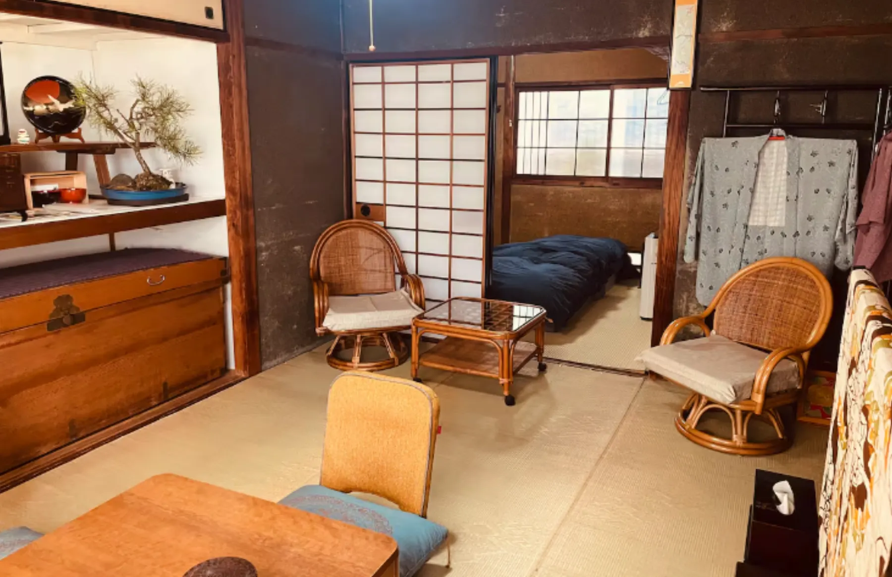
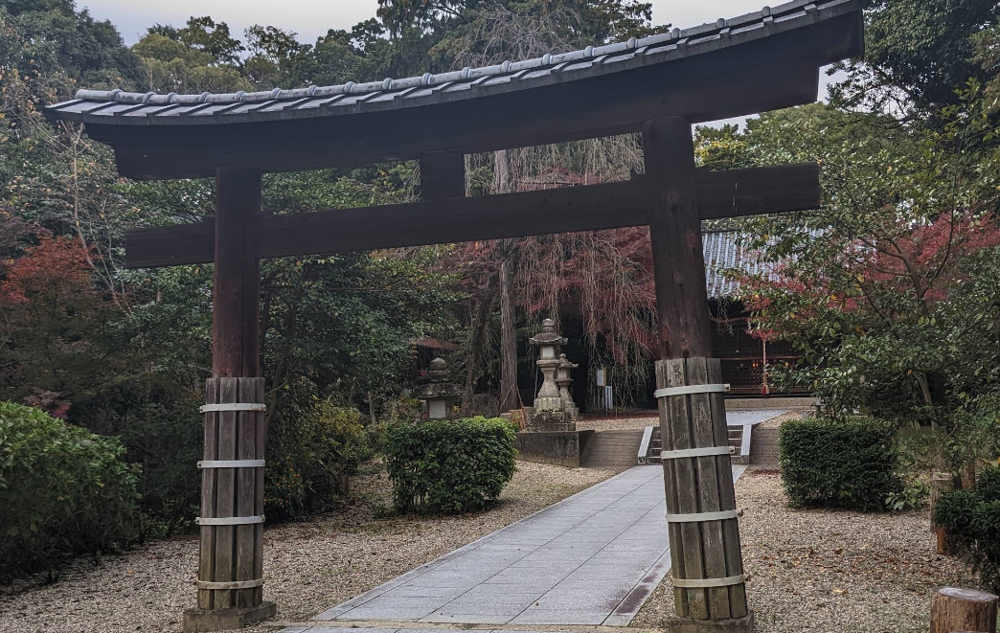
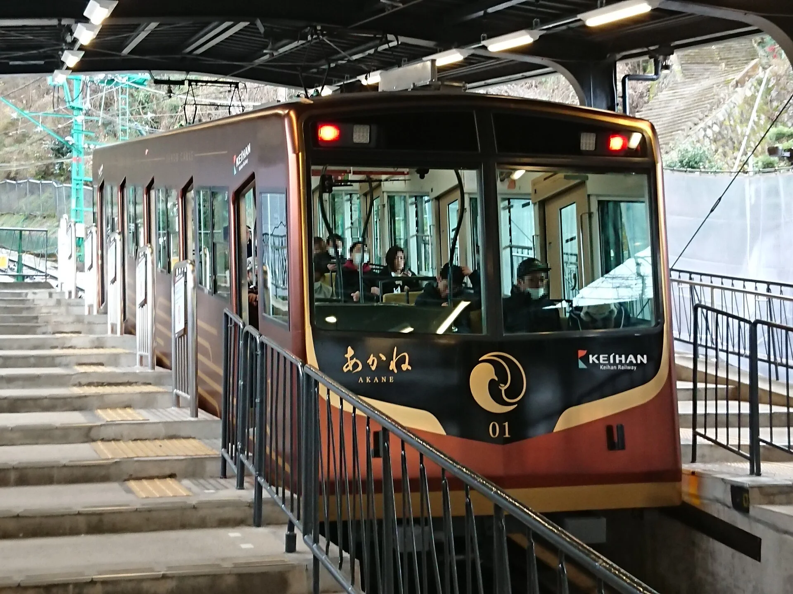
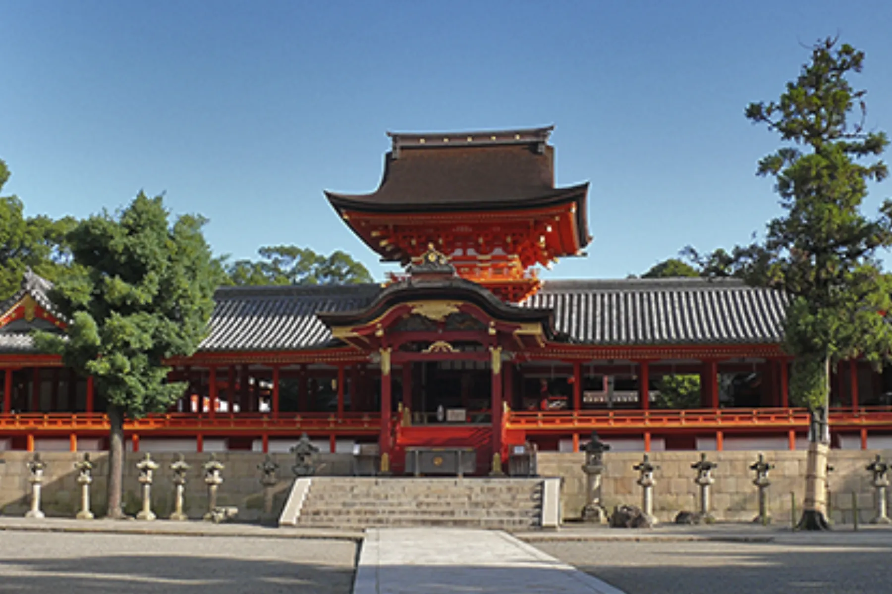
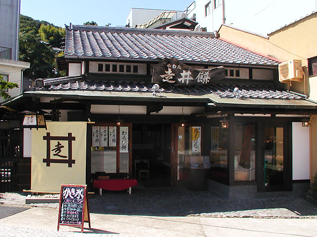
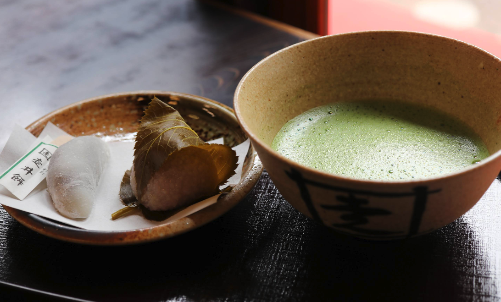
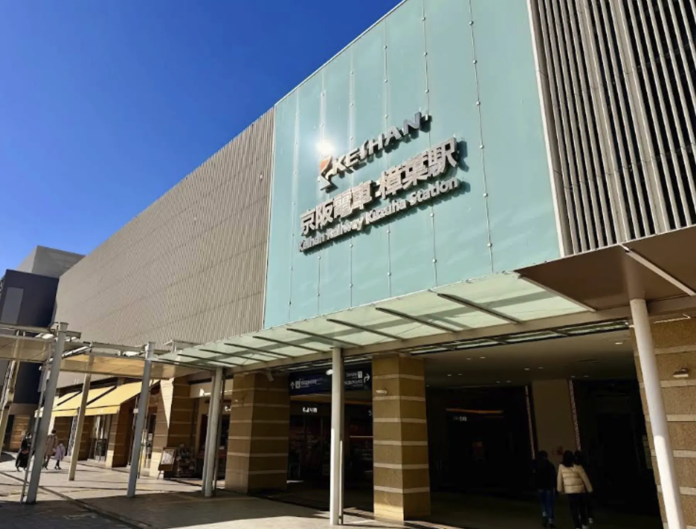

Arriving Around Noon? A Relaxed First Afternoon Near The Showa House
A shrine walk, a hilltop view, a local sweet, and an easy evening in Kuzuha.

There is no need to begin your stay by rushing somewhere far away.
If you arrive around noon after a long journey, you may still have
half a day ahead of you. It can be tempting to leave immediately for
central Kyoto or Osaka, but your first afternoon does not need to be
so busy.
When possible, I’m happy to arrange a check-in time that works with
your travel plans. One of the advantages of a small guesthouse is
that I can sometimes be flexible. You can leave your luggage, take a
short rest, and then begin by exploring somewhere close to home.
And if you would rather stay in, that is perfectly fine too. After a
long journey, an afternoon spent resting in the tatami room can be a
good beginning to your stay.
If you would like a little fresh air without taking the train, Katano
Tenjinsha Shrine is about a 20-minute walk from the house. It is an
easy neighbourhood walk and a good option when you want to step
outside without making a plan for the whole afternoon.

Katano Tenjinsha Shrine is an easy neighbourhood walk from The Showa House. 📍 View on Google Maps ↗
When I travel, I like to spend my arrival day close to where I am
staying. I walk around the neighbourhood, stop at a local
supermarket, and choose something to eat. Getting a feel for the
neighbourhood and tasting the food I find there is what makes me
feel that the journey has truly begun.
If you feel ready for a little more, this is the gentle first-afternoon
route I often recommend: a local train, a walk on Mount Otokoyama, and
an unhurried evening back in Kuzuha.
Take the Keihan Line to Iwashimizu-hachimangu
From Kuzuha Station, take the Keihan Main Line to
Iwashimizu-hachimangu Station. It is an easy local journey and feels
just right for an arrival day—far enough to begin exploring, but
close enough that the afternoon still feels relaxed.
The shrine stands on Mount Otokoyama. From the station, you can
follow the approach toward the mountain and choose how you would like
to go up.
Walk Up Slowly, If the Day Feels Right
If the weather is comfortable and you have the energy, I recommend
walking. The path is not only a way to reach the shrine. The approach
itself gives you time to notice the trees, feel the air on the
mountain, and leave the noise of travel behind.
The walk to the top takes around 20 minutes at a comfortable pace,
although this naturally varies from person to person.
There is no reason to hurry. Walk at your own pace and enjoy the
feeling of gradually approaching the shrine.
On a very hot day, in poor weather, or when the climb does not suit
you, take the Iwashimizu-hachimangu-sando cable instead. The cable is
a comfortable option, and choosing it does not make the afternoon any
less enjoyable.

The cable car is an easy alternative when you would rather not walk uphill.
Visit the Shrine and Look Out Across the Landscape
Iwashimizu Hachimangu has stood on the mountain for more than a
thousand years, but you do not need a long history lesson to enjoy
being there. Take time to visit the main shrine and walk quietly
through its forested grounds.
Although it is a wonderful place, you will usually see far fewer
international visitors here than at the famous sights in central
Kyoto. This often makes it easier to spend a calm afternoon at your
own pace.

Iwashimizu Hachimangu offers a calm first encounter with the history and landscape of the area. 📍 View on Google Maps ↗
Afterwards, stop at the Otokoyama viewpoint near the upper cable
station. Beyond the three rivers, the Kyoto basin and surrounding
mountains spread out below you.
Staying at The Showa House means staying between Kyoto and Osaka.
From this viewpoint, that location begins to feel like a real
landscape rather than a point on a map.
Try One Local Sweet

A traditional sweet shop beside the approach to Iwashimizu Hachimangu. 📍 View on Google Maps ↗
On the way back, look for Hashirii-mochi near the entrance to the
shrine approach. This soft rice cake filled with smooth red bean
paste has been enjoyed here for generations.
This is not about collecting famous sweets. It is simply nice to try
one thing that people in the area have known for a long time, then
continue your afternoon.
I especially recommend enjoying Hashirii-mochi with a bowl of
matcha. It is a gentle way to sit down and rest after visiting the
shrine.

Hashirii-mochi with matcha makes a gentle break after visiting the shrine.
Return to Kuzuha for an Easy Evening
Take the Keihan Line back to Kuzuha and spend a little time at
KUZUHA MALL. You can pick up something you forgot for your trip,
rest at a café, or simply walk around an ordinary shopping centre
used by people who live nearby.

Back in Kuzuha, the station and shopping centre make the evening simple. 📍 View on Google Maps ↗
Choose Dinner as Local People Do
Before returning to the house, stop at a supermarket, bento shop, or
neighbourhood food store. Looking around a local supermarket is one
small way to see what people buy and eat in everyday life.
Choose the bento and prepared dishes that look good to you.
End the Evening at Your Own Pace
Bring dinner back to the house and settle into the tatami room, or
eat out nearby and return when you are ready. Either way, let the day
end slowly. You have already taken a local train, walked on a mountain,
visited a shrine, tasted something from the neighbourhood, and seen a
little of ordinary life around Kuzuha.
Your first afternoon in Japan doesn’t have to be a famous one. An
afternoon close to home can become a warm beginning to the journey.